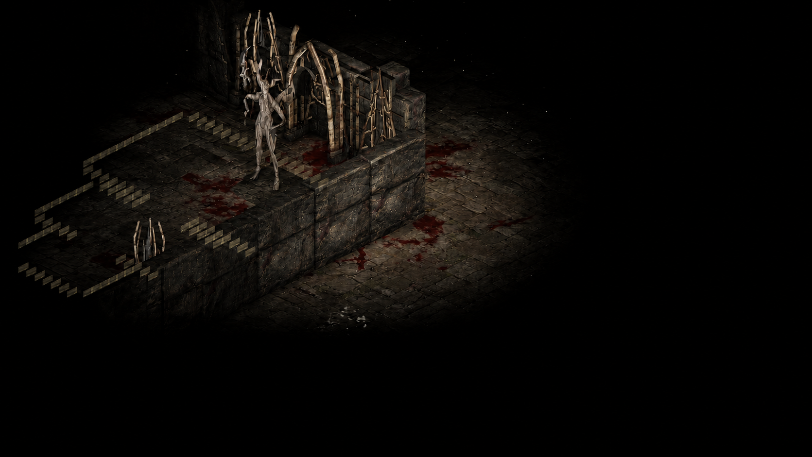
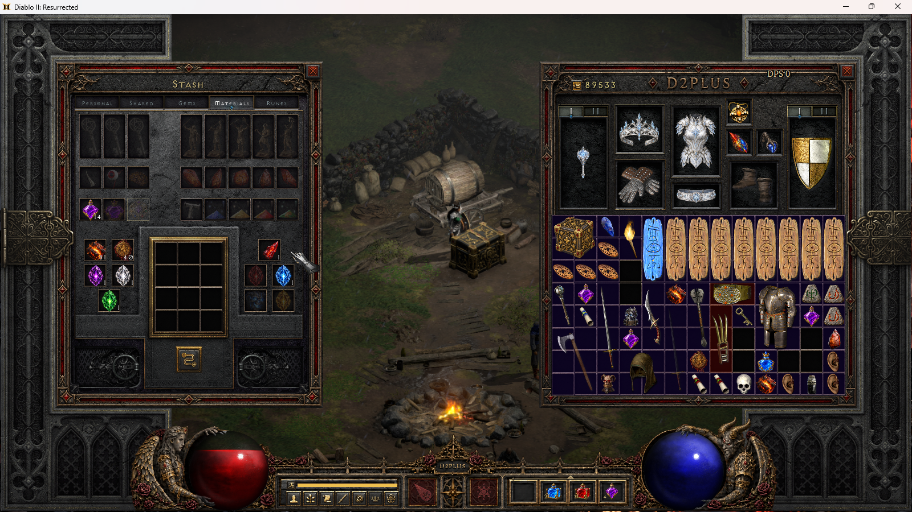
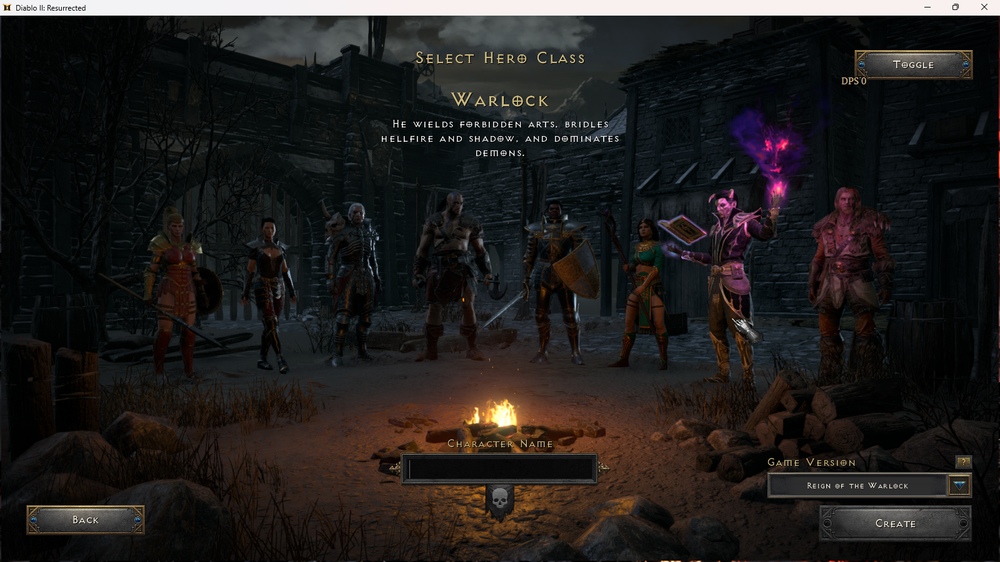
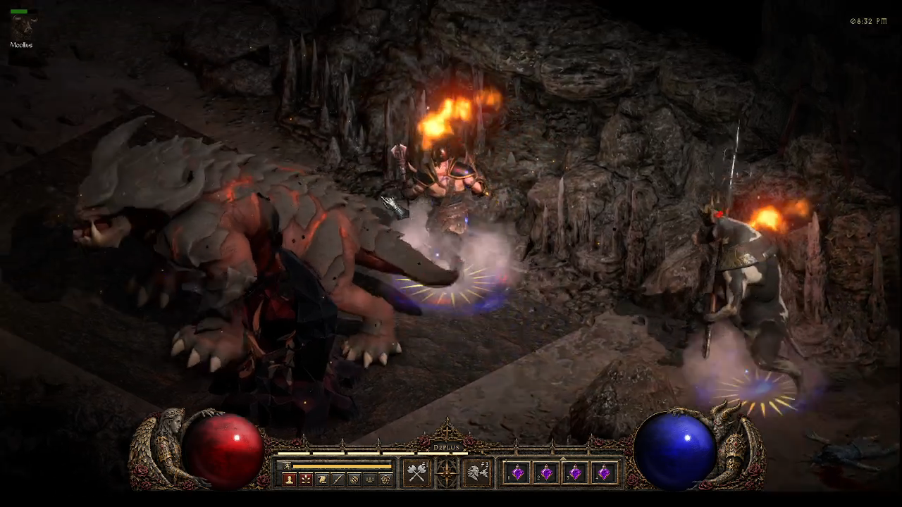

From the latest journeys · Alpha V2.0
D2PLUS screenshots
Custom bosses, dark caverns and a familiar Sanctuary with a new face. Explore scenes from the D2PLUS offline Diablo II: Resurrected mod.
Select an image to open it at full size. Captions identify retouched gameplay views and development captures.
Vharzith in Gloamweb Hollows

Sanctum of the First Nightmare


The Butcher

Rogue Encampment

Material storage


Warlock


Kharvul in The Cinderwound


Make your own descent
Read the dungeon and portal guide, explore the class skill changes or download the complete Alpha V2.0 package.